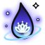
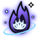

La forme choisie, en violet sombre et spectral ; le lotus du logo au cœur ; de petites orbes d'énergie autour. En grand, puis à 22 px sur fond jaune et sombre.
120 PA120 PA
H1 · Goutte d'âmeViolet nuitUne seule pointe, lisse. Une flamme violet profond, presque noire à la base ; le lotus blanc brille au fond.

120 PA120 PA
H2 · Goutte d'âmeAméthyste et spectreUne seule pointe, lisse. Le violet glisse vers un bleu spectral sur les bords, comme un feu follet.
120 PA120 PA
H3 · Goutte d'âmePrune et violetUne seule pointe, lisse. Dans la couleur du logo du porteur : violet prune, lotus rosé.
120 PA120 PA
H4 · Flamme régulièreViolet nuitTrois pointes aux courbes régulières. Une flamme violet profond, presque noire à la base ; le lotus blanc brille au fond.

120 PA120 PA
H5 · Flamme régulièreAméthyste et spectreTrois pointes aux courbes régulières. Le violet glisse vers un bleu spectral sur les bords, comme un feu follet.
120 PA120 PA
H6 · Flamme régulièrePrune et violetTrois pointes aux courbes régulières. Dans la couleur du logo du porteur : violet prune, lotus rosé.